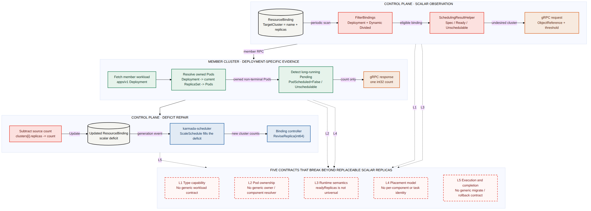

需要被调度、运行并持续维护的资源对象。
KARMADA / DAY39CODE RESEARCH · STYLE A
Karmada Descheduler 专项调研
从 Deployment 白名单
到工作负载迁移契约
代码层回答：为什么首版只闭环 Deployment；扩到更多任务类型会在哪 5 层断开；A-D 四条实现路线如何取舍。
upstream/master baseline · a5cf21eac2026-08-03 · intern research
Executive answer
Deployment 支持，不只是一条 GVK 白名单
5 层类型 · 归属 · 状态 · 放置 · 执行
≠
加几个 case 只能通过入口；要支持更多工作负载，5 层必须同时回答“删什么、搬什么、何时完成”。
可被计数和分配的运行实例；并非所有任务都可互换。
资源类型标识，只说明“它是谁”，不说明迁移语义。
ResourceBinding 记录工作负载被分到哪些集群。
Evidence ledger
历史只证明“首版收窄”，没有证明“其他类型不该做”
4 站Issue → 增强提案 → 责任拆分 → 实现
提出跨集群纠偏
动机较宽；讨论同时担心新增组件负担与重调度状态边界。
增强提案只承诺 Story 1
Karmada Enhancement Proposal（KEP）中的两个用户故事都用 Deployment；只处理资源不足导致 Pod 长期不可调度。
拆分组件责任
Pull Request（PR）中，Descheduler 下调旧集群副本；scheduler 看到缺口后决定新集群。
落地纵向切片
estimator 与 Descheduler 首版都硬编码 Deployment，并留下抽象 TODO。
直接事实 可以确定
KEP 和示例以 Deployment 为目标；当前代码仍是 Deployment 专用链。没有 review 文字明确写“拒绝 Job / StatefulSet”。
工程推断 需要注明
Deployment 最容易把 desired、ready、assigned、unschedulable 都压成可互换整数，因此适合做 best-effort 标量闭环；这是代码结构推断，不是 maintainer 原话。
Runtime chain
Descheduler 只制造缺口，scheduler 决定新位置
5 步scan · filter · count · subtract · reschedule
周期扫描 Binding
只从命名空间级（namespaced）ResourceBinding 缓存观察器（informer）读取候选。
descheduler.go · descheduleOnce→
卡住入口
要求 Deployment；策略须为 Divided + Aggregated，或 Divided + Weighted + DynamicWeight。
core/filter.go · FilterBindings→
找到长期异常 Pod
成员集群取 Deployment → current ReplicaSet → owned Pods，计数 PodScheduled=False。
server/replica/replica.go→
做标量减法
仅在 target < Ready ≤ Spec 时抬高 target；缺失时 Ready=-1，保护不生效。
descheduler.go · updateScheduleResult→
scheduler 填补缺口
metadata.generation 变化触发 ScaleSchedule（扩缩调度），Binding controller 应用新副本数。
scheduler.go · division_algorithm.go职责边界：Descheduler 不选择具体 Pod，也不直接指定新集群；它改旧调度结果，让既有 scheduler 再走过滤、打分和容量估算。
desired−Σ assigned=deficit
Scalar closure
四个数指向同一种可互换副本
6 − 2cluster-a 新目标 = 4
target = max(6 − 2, ready 4)
把 cluster-a 的目标写成 4。
→
若其他集群仍分配 4，则总分配从 10 降到 8，形成 2 个副本缺口。
→
10 − Σassigned 8 = 2
沿原调度能力重新放置 2 个副本。
Contract breaks
入口放开以后，还有四层会继续拦住
L1→L5任一层不成立，都不能安全迁移

类型与工作单元
它能否缩减？计数单位是什么？
Pod 归属
异常 Pod 应归到哪个组件或控制器？
运行状态
ready、完成进度与故障怎样解释？
放置结果
Binding 能否表达组件、身份与缺口？
执行与完成
何时扩目标、缩来源、回滚并确认完成？
Capability & ownership
资源类型和 Pod 归属，是两个独立问题
3 处filter · member fetch · owned Pods
当前能力由硬编码决定
即使资源实现了 GetReplicas，也无法自动进入 Descheduler；当前没有“允许纠偏、计数单位、安全边界”的通用能力描述。
supportedGVKs仅 apps/v1 DeploymentvalidatePlacement仅 Dynamic / DividedsupportedGVRsworkload 缓存仅 Deployment；Pod / ReplicaSet 是辅助 lister放开 GVK 只会把不懂的对象送进下一处报错。
异常 Pod 必须可追溯
Deployment 有稳定路径：current ReplicaSet 再到 owned Pods。其他类型可能直接拥有 Pod、经过子控制器，或同时包含多个组件。
Deploymentcurrent ReplicaSetowned Pods
GetUnschedulableReplicasswitch gvk 仅 DeploymentgetPodsForDeployment先找当前 ReplicaSet，再按 owner UID（对象唯一标识）取 Pod缺失契约组件 / 版本（revision）/ 归属链 / 工作单元身份selector（标签选择器）可能命中旧版本或兄弟组件，不能替代 owner 关系。
Runtime semantics
readyReplicas 不是通用任务进度
1 字段当前 helper 顶层硬读 readyReplicas
Deployment
desired
readyReplicas
unschedulable Pods
readyReplicas
unschedulable Pods
副本近似同质，可用 ready 作为缩减下界。
标量语义闭合
StatefulSet
readyReplicas
currentRevision
ordinal + PVC
currentRevision
ordinal + PVC
“减 2”没有说明是哪两个序号；PVC（持久卷声明）也需要明确恢复位置。
有数量，不等于可互换
Job
parallelism
active / succeeded
failed / completions
active / succeeded
failed / completions
parallelism 是并发度，succeeded 是已完成进度；不能把终态 Pod 当普通副本。
并发度 ≠ 剩余工作
Flink / AI
component roles
gang readiness
checkpoint / jobId
gang readiness
checkpoint / jobId
单个 worker Ready 不能证明作业可切换；gang（成组调度）和 checkpoint（检查点）决定能否恢复。
需要领域完成条件
当前风险：缺失
readyReplicas 会得到 Ready=-1，但流程不会停止；代码不校验状态时效，字段不是 JSON number 时还可能 panic。Placement model
Components 已有，逐集群组件结果仍缺失
向量 → 标量信息在 TargetCluster 处丢失
ResourceBindingSpec：描述全局需求
Components[]
{ name: "master", replicas: 1 }
{ name: "worker", replicas: 8 }
Replicas: legacy scalar
{ name: "master", replicas: 1 }
{ name: "worker", replicas: 8 }
Replicas: legacy scalar
GetComponents 能提取多 Pod template 的资源需求，但当前适用路径要求整个组件集合只落到一个集群。
≠
TargetCluster：只保存逐集群标量
TargetCluster {
Name string
Replicas int32
}
no component / ordinal / task
Name string
Replicas int32
}
no component / ordinal / task
无法表达“cluster-a 移走 2 个 worker，但保留 master”，也无法检测组件互换或分别扩缩。
源码事实
pkg/util/binding.go 明确指出：完整方案需要改变调度结果存储，并可能扩展 TargetCluster 的逐组件信息。Actuation & completion
当前执行只有 ReviseReplica，没有迁移事务
1 标量对象修订入口只接收 replica
改 Binding
binding.Spec.Clusters[i].Replicas = target
→
scheduler 补缺口
选择目标集群，但没有 workload-specific 完成任务。
→
controller 改对象
ReviseReplica(object, int64) 写入副本或 Job 并发度。
要迁走哪个 component / ordinal / task？
先补目标还是先缩来源？何时允许切换？
目标就绪、组件成组就绪、检查点恢复，哪个才算完成？
目标失败后如何恢复旧分配并避免重复执行？
Descheduler、scheduler、领域控制器谁是唯一写入方？
Capability classes
“所有类型”至少拆成三类能力
T0 / T1 / T2标量可替换 · 身份进度 · 多组件状态
Deployment · ReplicaSet · 合规单组件自定义资源（CRD）
缺通用能力描述、Pod 归属解析和状态解释；但放置结果仍可用一个整数表达。
优先扩展
B 可覆盖
B 可覆盖
StatefulSet · Job · CronJob · Pod
StatefulSet 需要序号与 PVC；Job 的
parallelism 不等于剩余任务；CronJob 还隔着子 Job。必须领域执行
D 主导
D 主导
FlinkDeployment · 分布式训练 · 多角色 AI 任务
Components[] 只描述全局需求；缺逐集群组件向量、成组调度、检查点与 jobId 完成语义。D 先保证语义
C 取决于产品
C 取决于产品
Route A · built-ins
逐 GVK 增加内建分支
快 / 窄过渡方案，不是“全类型架构”
具体源码改动
pkg/descheduler/core/filter.go扩 supportedGVKs，仍按类型准入。pkg/estimator/server/server.go增加对应 GVR informer / lister。server/replica/replica.go为新类型增加 owner chain 与 Pod 计数分支。pkg/descheduler/core/helper.go按新类型读取 ready 或等价状态。tests每种 GVK 单测、成员侧 owner 测试、跨组件 e2e。Route B · capability adapter
复用 ResourceInterpreter，补齐纠偏能力接口
推荐主干先覆盖 T0，不承诺 T1 / T2
具体源码改动 建议接口
cmd / client / RBAC补原始对象获取、REST mapper、解释器 wiring 与读取权限，或另设 profile resolver。resourceinterpreter/interpreter.go增加类似 GetDeschedulingProfile 的 hook，声明能力、owner / revision 规则和状态语义。pkg/descheduler/core在控制面解析 profile，按能力和状态时效准入，不再硬读 readyReplicas。estimator.proto请求携带 optional profile；响应保留 count，并增加结构化 reason。estimator/server/replica通用 resolver 校验 owner UID / revision，并定义任意 GVR 的缓存或 API fallback。guardrailsopt-in（显式启用）、dry-run、每轮预算、唯一 Binding 写入方。Native model vs delegated execution
组件向量进核心，状态语义留给 operator
C / D一个改表示，一个改执行边界
原生组件感知的 Binding / scheduler 重构
让 Karmada 核心直接表达并重新分配逐集群组件向量，适合明确需要跨集群组件级分布的产品目标。
apis/work/.../binding_types.go扩 TargetCluster 的 per-component assignment。estimator.proto返回 component deficits，不再只有 int32。scheduler/core组件级 estimation、division、scale / reschedule。binding controller增加类似 ReviseComponents 的应用契约。generated / CRD / migration生成代码、OpenAPI、兼容读写与升级测试。覆盖较广、核心改动最大；仍不能单独解决 checkpoint / ordinal 等领域语义。仅在产品确认组件级跨集群分配后启动。
核心给计划，已注册执行方完成迁移
Descheduler 输出候选；scheduler 选目标；adapter、Operator 或存储控制面负责 checkpoint、ordinal、gang 与完成确认。没有执行方时保持不支持。
D1 · GracefulEvictionTasks扩展现有 embedded task；已有 source、preserved state、health / timeout，仍缺独立 status 与 work-unit identity。D2 · new task CRD独立 status 和重试更清楚，但增加 controller、RBAC 与升级成本。WorkloadRebalancer可作为显式 intent 入口；不能与 Descheduler 各自写 Binding。pkg/scheduler仍负责目标集群选择，不接管应用状态机。execution provider显式实现 prepare、target-ready、cutover、rollback。安全上限高，但取决于执行合同和真实执行方；Job / StatefulSet 不会天然获得跨集群迁移能力。
Decision map
B 是近期主线，D 有执行方再接入；A 过渡，C 条件启动
2 维语义覆盖 × Karmada 核心改动成本
语义覆盖：标量 → 身份 / 进度 / 组件Karmada 核心改动成本：低 → 高
广覆盖 / 较低核心改动广覆盖 / 核心重构窄覆盖 / 快速交付投入大但覆盖仍受限
A逐 GVK
快但重复
快但重复
BT0 通用
边界清楚
边界清楚
D条件执行
上限较高
上限较高
C组件原生
核心最重
核心最重
Phased delivery
从“可替换标量”交付，向“领域迁移任务”演进
B → DA 过渡 · D/C 按条件启动
先划能力边界
定义 T0/T1/T2、opt-in、dry-run、预算、唯一写入方与拒绝原因。
交付一个受控 adapter
用 A 验证额外 T0 类型，但接口按 B 定型，避免继续堆 switch。
先定执行方与任务载体
T0 继续走 B；复杂类型先比较 embedded task / 新 CRD，并确认谁执行完成协议。
产品需要时再改 Binding
只有确认跨集群逐组件分配价值，才启动 API 与 scheduler 联动重构。
首版闭合了最小纵向切片
事实 已核查材料的示例和首版实现都以 Deployment 为边界；推断 它的四个计数可压成同一个可替换标量。
五层契约必须一起成立
类型准入、Pod 归属、运行状态、放置表示、执行完成，任一层缺失都会把“重调度”变成不安全缩容。
B 先落地，D/C 按条件启动
B 承担可替换标量通用化；D 先确认执行方和 task 载体；A 仅过渡，C 等组件级需求确认后再投入。